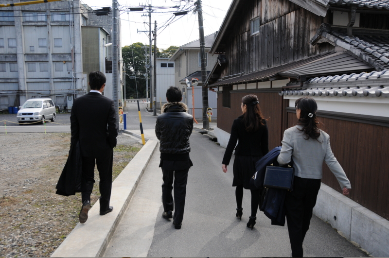

墓参りしてきた
公開日：

プログラミング生放送勉強会 第18回＠大阪 #pronama : ATND に参加してきました！……の前に、名張へ寄り道して墓参りしてきた。

この前行ったばかり（1年2ヶ月ぶりの墓参り（観光ガイドと道案内つき） - だるろぐ）だけど、じいちゃんが亡くなった - だるろぐ こともあり、母＋兄弟3人で。この組み合わせで新幹線に乗るだなんて、子どものころ以来だ。
そう言えば、兄弟全員がそろうことなんかもうなくなったな。誰かしらとしょっちゅう会うけれど、全員で集まるというのはない。次こうやって全員顔を合わせるのも、誰かが結婚したとか、親戚に不幸があったとか、そういうきっかけでもなければもうないのだろうね*1。
*1:そういえば前回集まったのは親父の60歳の誕生日で、その前は妹の結婚式だった